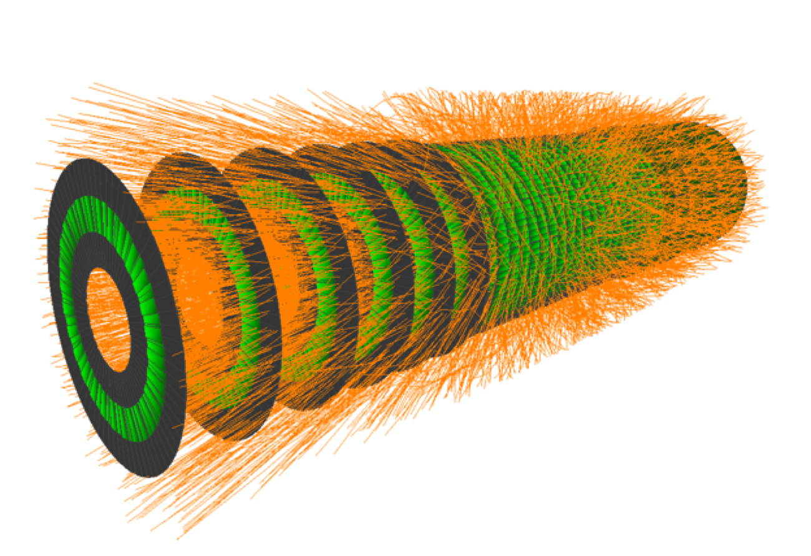

02 / course project · spring 2026
Particle Track Reconstruction as a Spin-Glass Optimization Problem
Course project for Computational Statistical Physics at ETH Zürich, completed in collaboration with Nicola Mucciaccio.
download presentation ↗download report ↗
Overview
We studied particle-track reconstruction in a simplified two-dimensional detector. Candidate track segments were represented as binary variables in an Ising-like Hamiltonian, with interaction terms encoding alignment, curvature consistency, forks, merges, and other geometric constraints. The resulting energy-minimisation problem was solved using Metropolis-Hastings simulated annealing.
The detector model contained five concentric layers and twenty simulated particles per event, with Gaussian measurement noise and Poisson-distributed fake hits. The simulation kernel was implemented in C++, while the analysis and visualisation were carried out in Python. Hyperparameters were tuned with Bayesian optimisation using Optuna on the Euler cluster.
On noise-free test data, the model reached 85.3% strict track efficiency, 93.2% soft track efficiency, and a 5.3% fake rate. When evaluated on noisy data, the model tuned for noise achieved 30.7% strict and 58.6% soft track efficiency. The main failure mode was the swapping of nearby hits between otherwise plausible tracks, reflecting the limits of local geometric constraints.
spin-glass optimisationsimulated annealingC++Python